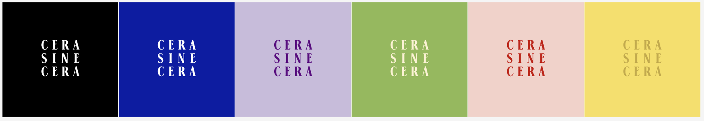
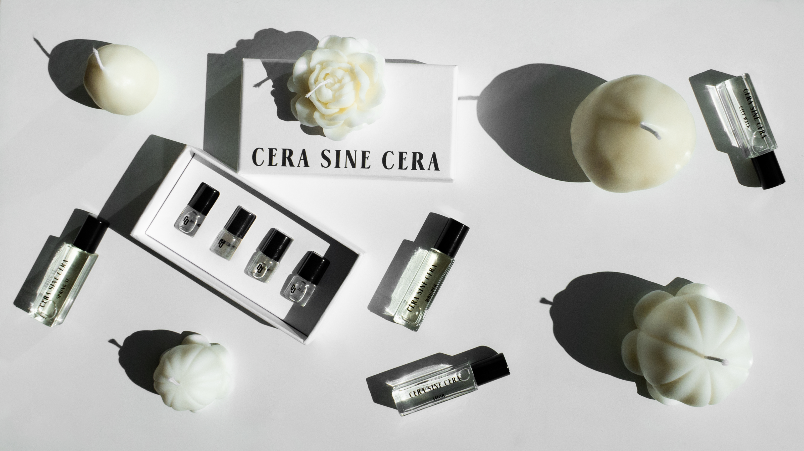
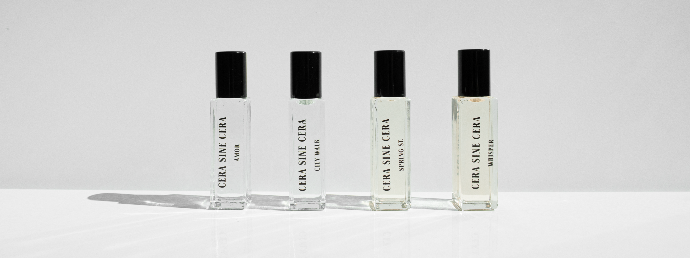
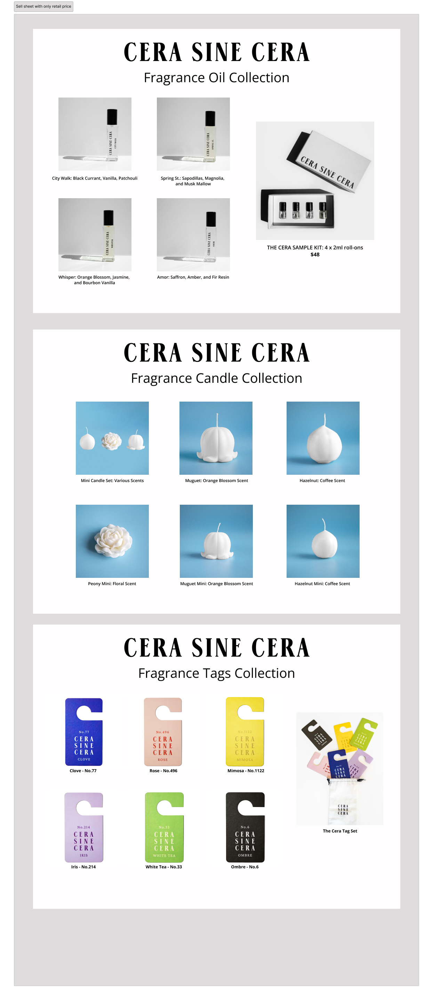
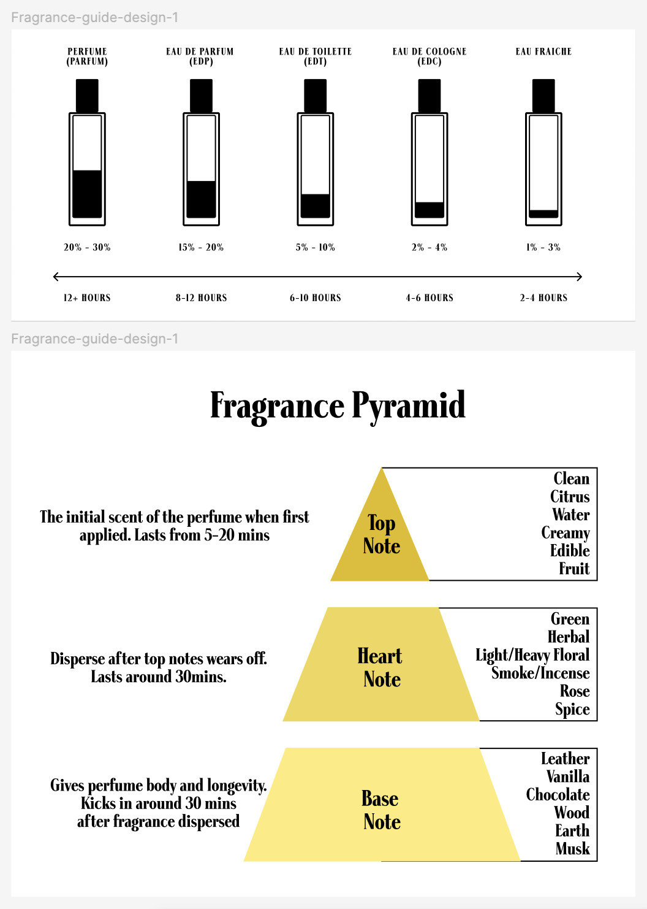

I was the creative director and founding member of Cera Sine Cera, a modern luxury fragrance brand. I created the brand's visual identity, including the logo, packaging, product photography and marketing materials. I also worked on the brand's website and social media presence.
    